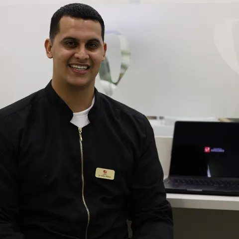
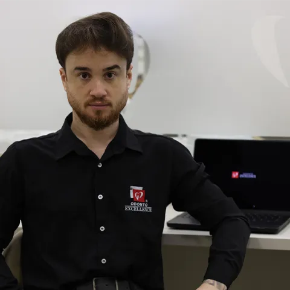
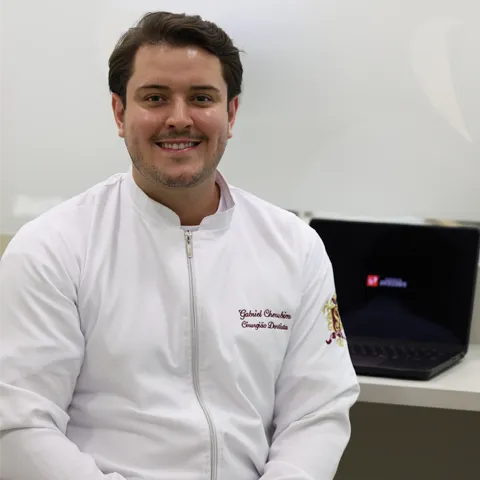
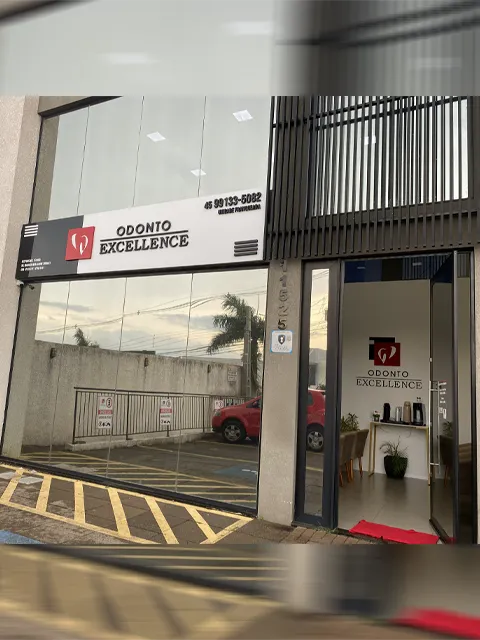
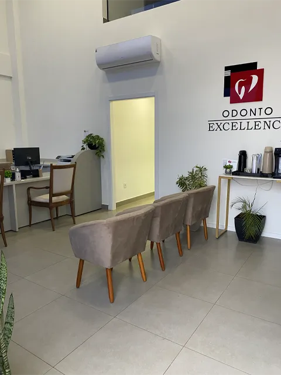
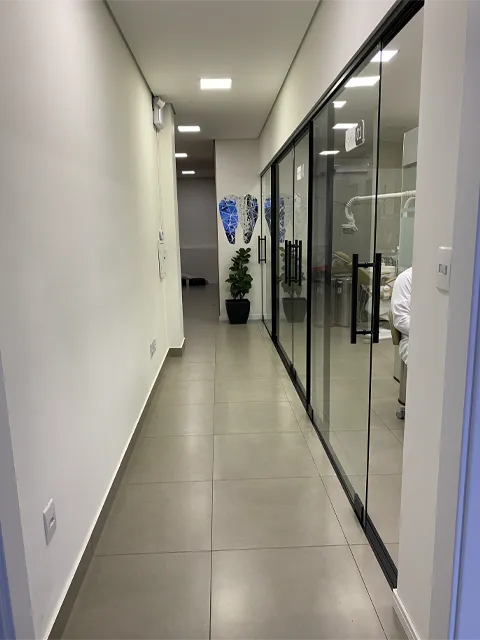
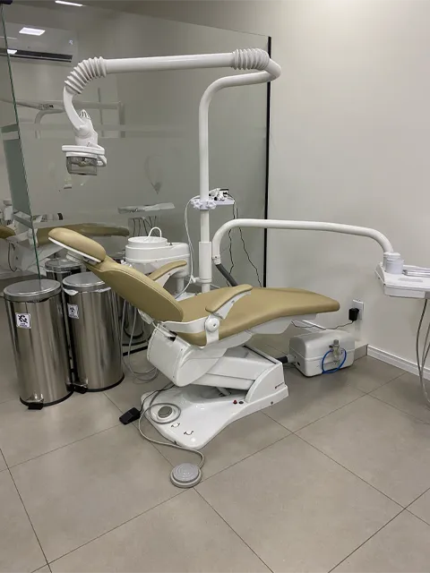

Cuidar do seu sorriso pode transformar muito mais do que a sua aparência.
Odontologia completa em Santa Cruz, Cascavel, com atendimento próximo, planejamento individualizado e profissionais preparados para cuidar de cada etapa do seu sorriso.
Cada paciente é avaliado a partir da própria necessidade.
02
Tratamentos
Tudo o que seu sorriso precisa em um único lugar.
03
Equipe preparada
Acompanhamos cada etapa do seu tratamento.
04
Horários ampliados
Segunda a sexta até as 20h e sábado pela manhã.
Por onde começar
Como podemos cuidar do seu sorriso?
Escolha a situação que mais se parece com a sua. Mostramos o caminho mais indicado para começar.
Direcionamento · Implantes e próteses
A reposição de dentes pode envolver soluções como implantes ou próteses. A indicação depende da avaliação de cada caso, que considera a saúde da gengiva e do osso.
Dor de dente precisa ser examinada por um profissional. Na consulta, investiga-se a origem do desconforto e, em alguns casos, pode haver indicação de tratamento de canal.
A Odonto Excellence Santa Cruz reúne, em um só endereço, profissionais e tratamentos para diferentes fases da saúde bucal, da prevenção aos procedimentos cirúrgicos.
Estrutura
Ambiente organizado para receber diferentes tipos de atendimento.
Equipe
Profissionais com atuação em diferentes áreas da odontologia.
Tratamentos
Clínica geral, endodontia, ortodontia e cirurgia.
Atendimento
Planejamento definido a partir da avaliação de cada paciente.
Os tratamentos realizados na clínica, organizados por área. A indicação de cada um é feita após avaliação profissional.
01
Ponto de partida
Clínica Geral
Cuidados preventivos, avaliações e acompanhamento da saúde bucal.
02
Endodontia
Tratamentos relacionados à parte interna do dente, incluindo tratamento de canal quando indicado.
03
Ortodontia
Planejamento para correção do posicionamento dos dentes e da mordida.
04
Cirurgia Odontológica
Procedimentos cirúrgicos realizados após avaliação e indicação profissional.
Conheça a equipe
Profissionais que cuidam do seu sorriso.

Carlos Wilson
Cirurgião-Dentista
Clínica Geral
Endodontia
Ortodontia
Cirurgia Odontológica
Atendimento individualizado, humanizado e pautado na segurança, ética e excelência profissional. Seu trabalho busca unir conhecimento, precisão e cuidado, considerando saúde, função e estética do sorriso.

Maurício Malacarne Thomazi
Cirurgião-Dentista
Ortodontia
Implantodontia
O atendimento começa pela conversa. Antes de qualquer procedimento, Maurício busca ouvir com atenção o que o paciente traz, criando um espaço de confiança para que as decisões sobre o tratamento sejam tomadas com segurança e tranquilidade.

Gabriel Cherubim
Cirurgião-Dentista
Prótese
Dentística
Endodontia
Gabriel trabalha com avaliação detalhada e individualizada de cada paciente, buscando entender o problema atual, as causas relacionadas a ele e os fatores que podem favorecer sua recorrência — preservando a saúde bucal a longo prazo.
Como funciona
Da primeira conversa ao acompanhamento.
01
Primeiro contato
Converse com nossa equipe.
02
Avaliação
O profissional analisa individualmente sua necessidade.
03
Planejamento
São apresentadas as possibilidades de tratamento indicadas para o caso.
04
Tratamento
O atendimento é realizado conforme o planejamento estabelecido.
05
Acompanhamento
A equipe acompanha a evolução do paciente.
Estrutura
Um espaço pensado para receber você com conforto e segurança.
Recepção, consultórios e espaços internos da unidade Santa Cruz.

Fachada

Recepção

Consultórios

Atendimento
Dúvidas
Perguntas frequentes
As respostas são orientativas. A indicação de qualquer tratamento depende de avaliação presencial.
A indicação só pode ser feita após uma avaliação presencial. Na consulta, o profissional examina, escuta suas queixas e explica as alternativas adequadas ao seu caso.
Para consultas periódicas de acompanhamento e sempre que houver dor, sensibilidade, sangramento na gengiva, inchaço ou outra alteração na boca. O intervalo entre consultas é orientado pelo profissional.
O profissional conversa sobre seu histórico e suas queixas, examina dentes e gengivas e, quando necessário, solicita exames complementares. Ao final, apresenta as possibilidades de tratamento para o caso.
Sim. A clínica realiza atendimentos em clínica geral, endodontia, ortodontia e cirurgia odontológica, o que permite acompanhar diferentes necessidades no mesmo lugar, conforme a avaliação de cada caso.
Pode ser indicado quando a parte interna do dente está comprometida, por exemplo por cáries profundas, fraturas ou infecções. Somente a avaliação do profissional confirma essa necessidade.
Começa com avaliação e planejamento para corrigir o posicionamento dos dentes e da mordida. O tratamento é acompanhado em consultas periódicas, e a duração varia de acordo com cada caso.
Na Avenida Brasil, 11525, Sala 2, no bairro Santa Cruz, em Cascavel/PR.
De segunda a sexta, das 9h às 20h. Aos sábados, das 8h às 12h.
Contato
Odonto Excellence Santa Cruz
Avenida Brasil, 11525, Sala 2
Santa Cruz — Cascavel/PR